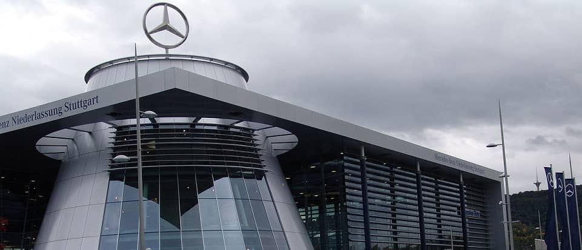
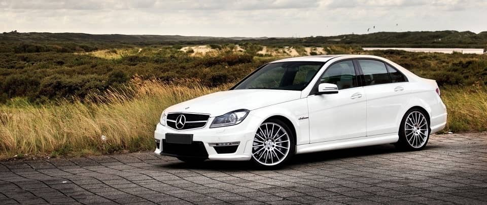
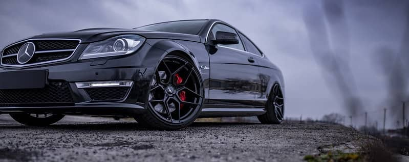
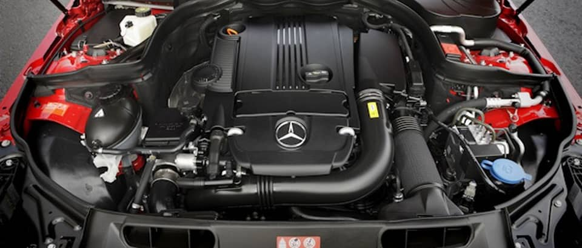

О компании

Mercedes-Benz — торговая марка и одноимённая компания — производитель легковых автомобилей премиального класса, грузовых автомобилей, автобусов и других транспортных средств, входящая в состав немецкого концерна «Daimler AG». Является одним из самых узнаваемых автомобильных брендов во всём мире. Штаб-квартира Mercedes-Benz находится в Штутгарте, Баден-Вюртемберг, Германия.
Модель

Mercedes-Benz W204 — 3-е поколение среднеразмерных престижных автомобилей С-класса немецкого автопроизводителя Mercedes-Benz. Пришло на смену модели Mercedes-Benz W203. Впервые автомобиль был представлен СМИ в январе 2007 года в музее Mercedes-Benz в Штутгарте. В марте того же года он дебютировал на Женевском автосалоне и официально поступил в продажу. Изначально модель была доступна только в кузове седан, но уже в сентябре 2007 года к ней добавился универсал.
В 2011 году Mercedes-Benz W204 претерпел рестайлинг, в ходе которого он получил обновление передней оптики, бамперов, интерьера и модельного ряда двигателей. Кроме того, в середине февраля 2011 года компания официально анонсировала версию С-класса в кузове купе.
В 2014 году на смену W204 пришёл автомобиль Mercedes-Benz W205. Тем не менее, вариант в кузове купе производился вплоть до 2016 года. Всего компания Mercedes-Benz продала более 2,4 млн автомобилей Mercedes-Benz W204 по всему миру.
Mercedes-Benz W204 получил колоссальный успех на рынке. Он стал вторым самым продаваемым престижным автомобилем начального уровня в Канаде и США после BMW E90 (3-й серии), а также наиболее популярным седаном в средней ценовой категории в Мексике. В 2011 году на Токийском автосалоне C-класс получил звание «импортного автомобиля года» в Японии (второй раз подряд). В том же году модель C250 CDI заслужила звание лучшего премиального среднеразмерного автомобиля в Австралии. В 2012 году 3-е поколение С-класса вошло в топ-10 самых продаваемых автомобилей в Англии с общим числом продаж в 37 261, уступив BMW 3 серии.
С63 AMG

Ограниченная серия купе, четвёртая по счету работа подразделения Skunkworks AMG, планировалась к выпуску ограниченным тиражом в 650 штук, но после увеличили до 800 единиц.
Black Series оснащается тем же атмосферным 6.2 литровым V8 двигателем серии M156, но с коленвалом, кованными поршнями и шатунами от SLS, а также новым масляным радиатором и перенастроенным ЭБУ двигателя. Вес автомобиля уменьшился всего на 20 кг по сравнению с обычным C63. Мощность силового агрегата составила 517 л.с (при 6800 об/мин) и 620 Н·м крутящего момента при 5000 об/мин. В автомобиль установили автоматическую коробку передач AMG SpeedShift MCT, но вместо гидромуфты в ней используется система двойного сцепления, которая управляется электронным блоком управления. Разгон с 0 до 100 км/ч составляет 4.2 секунды, до 200 км/ч — 13.9 секунд. Максимальная скорость ограниченна электроникой на отметке в 250 км/ч (около 300 км/ч без ограничителя).
Автомобиль получил более расширенные колёсные арки, два отверстия в капоте для отвода тепла и увеличения прижимной силы, более жёсткие регулируемые амортизаторы KW и пружины, задний дифференциал ограниченного скольжения, систему ESP с тремя режимами, новые перфорированные композитные тормоза и ковшеобразные сиденья AMG.
При установке опционального пакета AMG Aerodynamic Package можно получить карбоновые канарды по углам переднего бампера, передний сплиттер, который снижает подъёмную силу, и антикрыло, а в Performance Package полу-слики Dunlop Tires и радиатор масла дифференциала.
Трассу Северная Петля автомобиль преодолел за 7 минут 45 секунд, такое же время показал CLK63 AMG Black, а на тест-треке Top Gear, со временем в 1 минуту 21 секунду, машина оказалась быстрее Ferrari 599 (01:21.2) и Audi R8 (01:21.6).
Автомобиль поступил в продажу в январе 2012 года по цене около €135 000. Все экземпляры были распроданы за полгода.
Двигатели

На момент старта продаж были представлены бензиновые четырёхцилиндровые двигатели M271 и V6 M272, а также дизельные I4 OM646, OM651 и V6 OM642. Большинство двигателей представляют собой модификации силовых агрегатов предыдущего поколения с повышенной мощностью и уменьшенными выбросами и расходом топлива.
В конце 2008 года линейку силовых агрегатов C-класса серии W204 пополнили четырехцилиндровые дизельные двигатели нового поколения с двухэтапным турбонаддувом серии ОМ651.
При рестайлинге 2011 года изменения коснулись и линейки моторов Mercedes-Benz W204. Вместо старого бензиновой 3,5-литрового V6 двигателя мощностью 292 л.с. установили двигатель аналогичного объема 3,5-литра V6 CGI нового образца, выдающий 306 л.с. (370 Н·м), опробованный на семействе CLS-класса второго поколения.
С апреля 2012 года на рынок поступила модернизированная версия седана Mercedes-Benz C180 BlueEFFICIENCY, оснащённая двигателем 1,6-литровым двигателем нового поколения. Особенностью силового агрегата являлся уменьшенный рабочий объём и сниженный до 5,8 литров расход топлива.